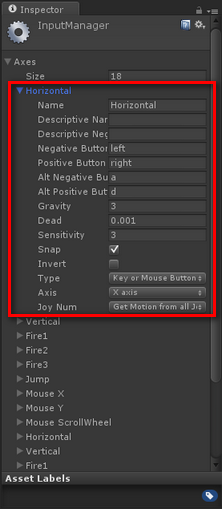

Unity Input Manager
Inputs, Outputs and the Input Manager
Unity Input Manager - Also Tutorial 2-3
Each program you write, whether the program is a phone application, a web application, a game or an embedded system, needs some sort of an input. In general every program needs some sort of an input and some sort of an output. The output is what the users sees, and the input is what the user enters or gives to the program to generate the output based on some algorithm.
Unity 3D is no different. The game engine needs to be able to process inputs from different sources:
- Keyboard
- Mouse
- Joystick(s)
Unity 3D manages its inputs through the Input Manager. The Input Manager is accessible by selecting Edit->Project Settings->Input from the main menu bar.
Input Manager - Also Tutorial 2-3


Horizontal Axis Properties – Tut 7.1
Unity Input Manager – Tut 7.1
Figure 1 lists all of the out of the box Input configurations defined in the game engine. Let’s go ahead and expand the first Input Definition called Horizontal. Looking at Figure 2, you will notice the attributes that are defined under the Horizontal Axis input configuration. The following are the properties of the input configuration that are important to take a note of:
- Name: the name of the axis as defines in the Input Manager. This is the name that you can refer to in your C# code for to detect and perform an operation as desired.
- Positive Button: defines the primary button that will provide the positive direction / force.
- Negative Button: defines the primary button that will provide the negative direction / force.
- Alt. Positive Button: same as the positive button, but defines a secondary input intake.
- Alt. Negative Button: same as the negative button, but defines a secondary input intake.
- Type: defines where the input source is coming from; (Keyboard/Mouse/Joystick).
- Axis: which axis in the world should the force be applied to.
